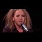

<html>
 <head>
  <title>
   This Helps Me get through this sickness. Is there anything connecting the Vatican to Podesta?
  </title>
  <meta content="Post on /v/Pizzagate archived on 2016-12-02 by jangles." name="description"/>
  <meta content="This Helps Me get through this sickness. Is there anything connecting the Vatican to Podesta?" property="og:title"/>
  <meta content="Post on /v/Pizzagate archived on 2016-12-02 by jangles." property="og:description"/>
  <link href="../../page.css" rel="stylesheet"/>
  <meta content="https://voat.pizzagate.hackliberty.org/thumbnails/66/85/6685791f-2c9d-4b5d-919b-6c51af83cc55.jpg" property="og:image"/>
  <meta content="https://voat.pizzagate.hackliberty.org/1453795.html" property="og:url"/>
 </head>
</html>
<body class="dark">
 <div id="container">
  <!-- array (
  'submissionid' => 1453795,
  'creationDate' => '2016-12-02 00:50:34',
  'domain' => 'youtube.com',
  'formattedContent' => NULL,
  'isAdult' => 0,
  'isAnonymized' => 0,
  'subverse' => 'pizzagate',
  'thumbnail' => '6685791f-2c9d-4b5d-919b-6c51af83cc55.jpg',
  'title' => 'This Helps Me get through this sickness. Is there anything connecting the Vatican to Podesta?',
  'url' => 'https://youtu.be/JkOHDoEkPW0',
  'userName' => 'jangles',
  'archivedLink' => NULL,
  'archivedDomain' => NULL,
  'isDeleted' => 0,
) -->
  <div style="text-align:center; font-size:24px; font-weight:bold;">
   Voat /v/Pizzagate Archive
  </div>
  <div class="content" role="main">
   <div class="sitetable linklisting" id="siteTable">
    <div class="submission id-1453795 link type-text" id="submission-1453795">
     <a name="submissionTop">
     </a>
     <p class="parent">
     </p>
     <a class="thumbnail may-blank" href="https://youtu.be/JkOHDoEkPW0" target="_self">
      
     </a>
     <div class="entry unvoted">
      <p class="title">
       <a class="title may-blank" href="https://youtu.be/JkOHDoEkPW0" tabindex="1" target="_self" title="This Helps Me get through this sickness. Is there anything connecting the Vatican to Podesta?">
        This Helps Me get through this sickness. Is there anything connecting the Vatican to Podesta?
       </a>
       <span class="domain">
        (
        <a href="https://archive.searchvoat.co/search.php?d=youtube.com">
         youtube.com
        </a>
        )
       </span>
      </p>
      <p class="tagline">
       submitted
       <time datetime="2016-12-02T00:50:34+00:00" title="12/02/2016 12:50:34 AM">2016-12-02T00:50:34</time> by
       <span class="userattrs">
        <a class="author may-blank" href="https://archive.searchvoat.co/search.php?u=jangles">
         jangles
        </a>
       </span>
      </p>
      <ul class="flat-list buttons">
       <li class="first">
        <a class="comments may-blank" href="https://archive.searchvoat.co/v/pizzagate/1453795" rel="nofollow">
         1 comment
        </a>
       </li>
      </ul>
     </div>
     <div class="child">
     </div>
     <div class="clearleft">
     </div>
    </div>
    <div class="clearleft">
    </div>
   </div>
   <div class="horizontal-line">
   </div>
   <div class="commentarea">
    <div class="sitetable nestedlisting" id="siteTable">
     <div class="child id-7024289 comment even" style="">
      <div class="entry unvoted">
       <div class="noncollapsed" id="7024289" style=";">
        <p class="tagline">
         <a class="author may-blank" href="https://archive.searchvoat.co/search.php?u=Poncho567">
          Poncho567
         </a>
         <span class="userattrs">
         </span>
         <time datetime="2016-12-02T01:39:00+00:00" title="12/2/2016 1:39:00 AM">2016-12-02T01:39:00</time>
        </p>
        <div class="usertext-body may-blank-within" id="commentContent-7024289">
         <div class="md">
          <p>
           <p>
            I can give information about a money/influence connection: Podesta started the organizations "Catholics in Alliance for the Common Good" and "Catholics United" to promote left-wing agenda in the Catholic Church, to bring about a "Catholic Spring"
            <a href="https://wikileaks.org/podesta-emails/emailid/6293">
             https://wikileaks.org/podesta-emails/emailid/6293
            </a>
            . George Soros is a top donor for these organizations.
            <a href="http://www.catholicleague.org/podesta-must-now-be-fired/">
             http://www.catholicleague.org/podesta-must-now-be-fired/
            </a>
            Soros paid $650,000 to influence Pope Francis when he came to the U.S.
            <a href="https://s3.amazonaws.com/lifesite/opportunities-fund-memo.pdf">
             https://s3.amazonaws.com/lifesite/opportunities-fund-memo.pdf
            </a>
           </p>
          </p>
         </div>
        </div>
        <ul class="flat-list buttons">
         <li class="first">
          <a class="bylink" href="https://archive.searchvoat.co/v/pizzagate/1453795/7024289" rel="nofollow">
           link
          </a>
         </li>
        </ul>
       </div>
      </div>
     </div>
    </div>
   </div>
  </div>
 </div>
 <div class="footer-container">
 </div>
</body>
